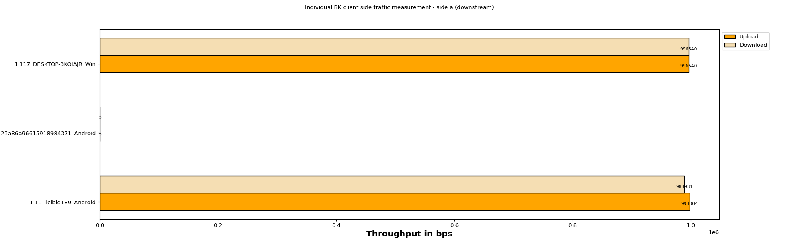
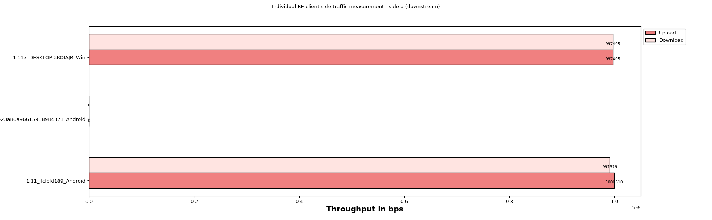
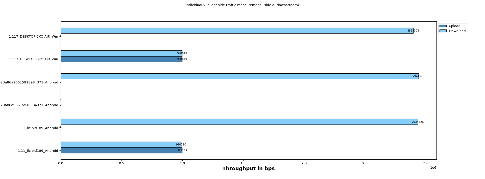
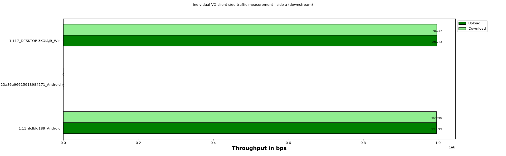
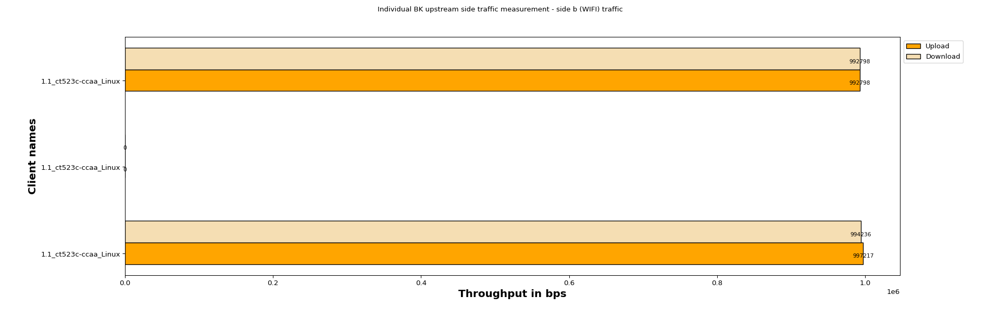
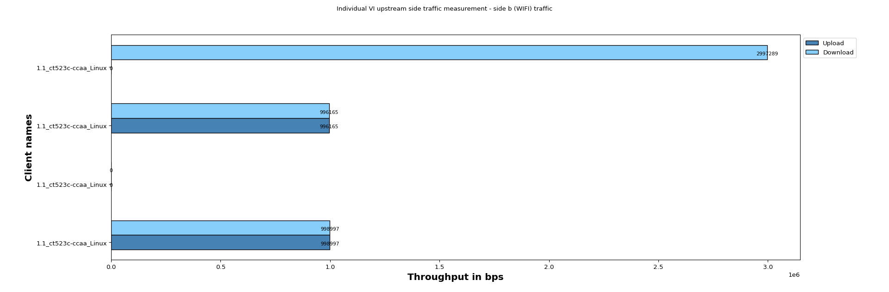
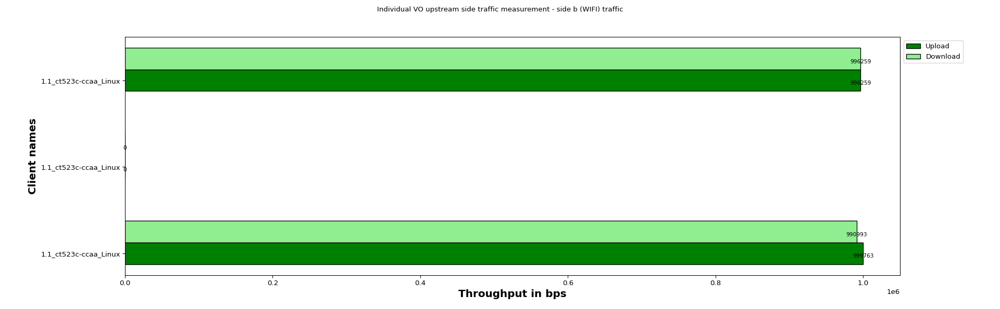

The Layer 3 Traffic Generation Test is designed to test the performance of the Access Point by running layer 3 Cross-Connect Traffic. Layer-3 Cross-Connects represent a stream of data flowing through the system under test. A Cross-Connect (CX) is composed of two Endpoints, each of which is associated with a particular Port (physical or virtual interface).
| Device Under Test |
|
||||||||||||||||
| Test Configuration |
|
||||||||||||||||||||||||
The below graph represents individual throughput for 3 clients running BK (WiFi) traffic. Y- axis shows “Client names“ and X-axis shows “Throughput in Mbps”.

| Client Alias | Host eid | Host Name | Device Type / Hw Ver | Endp Name | Port Name | Mode | Mac | SSID | Channel | Type of traffic | Traffic Protocol | Offered Upload Rate Per Client | Offered Download Rate Per Client | Upload Rate Per Client | Download Rate Per Client | Drop Percentage (%) |
|---|---|---|---|---|---|---|---|---|---|---|---|---|---|---|---|---|
| 1.11_ilclbld189_Android | 1.11 | ilclbld189 | motorola motorola one fusion+ r | 1.11androidmoto_C4_R3_TCP_Bi-di_BK-9-A | 1.11.di_BK | NA | NA | NA | NA | NA | LF/TCP | NA | NA | 998004 | 988931 | 0.0 |
| 1.15_cn-east-1a-23a86a96615918984371_Android | 1.15 | cn-east-1a-23a86a96615918984371 | HUAWEI LLD-AL10 r9 sdk: 28 | 1.15androidS5_R2_C1_Hnr_TCP_Bi-di_BK-10-A | 1.15.di_BK | NA | NA | NA | NA | NA | LF/TCP | NA | NA | 0 | 0 | 0.0 |
| 1.117_DESKTOP-3KOIAJR_Win | 1.117 | DESKTOP-3KOIAJR | Win/x86 6.2 | 1.117WinDESKTOP-3KOIAJR_TCP_Bi-di_BK-11-A | 1.117.3KOIAJR_TCP_Bi | NA | NA | NA | NA | NA | LF/TCP | NA | NA | 996540 | 996540 | 0.0 |
The below graph represents individual throughput for 3 clients running BE (WiFi) traffic. Y- axis shows “Client names“ and X-axis shows “Throughput in Mbps”.

| Client Alias | Host eid | Host Name | Device Type / Hw Ver | Endp Name | Port Name | Mode | Mac | SSID | Channel | Type of traffic | Traffic Protocol | Offered Upload Rate Per Client | Offered Download Rate Per Client | Upload Rate Per Client | Download Rate Per Client | Drop Percentage (%) |
|---|---|---|---|---|---|---|---|---|---|---|---|---|---|---|---|---|
| 1.11_ilclbld189_Android | 1.11 | ilclbld189 | motorola motorola one fusion+ r | 1.11androidmoto_C4_R3_TCP_Bi-di_BE-6-A | 1.11.di_BE | NA | NA | NA | NA | NA | LF/TCP | NA | NA | 1000310 | 991379 | 0.0 |
| 1.15_cn-east-1a-23a86a96615918984371_Android | 1.15 | cn-east-1a-23a86a96615918984371 | HUAWEI LLD-AL10 r9 sdk: 28 | 1.15androidS5_R2_C1_Hnr_TCP_Bi-di_BE-7-A | 1.15.di_BE | NA | NA | NA | NA | NA | LF/TCP | NA | NA | 0 | 0 | 0.0 |
| 1.117_DESKTOP-3KOIAJR_Win | 1.117 | DESKTOP-3KOIAJR | Win/x86 6.2 | 1.117WinDESKTOP-3KOIAJR_TCP_Bi-di_BE-8-A | 1.117.3KOIAJR_TCP_Bi | NA | NA | NA | NA | NA | LF/TCP | NA | NA | 997405 | 997405 | 0.0 |
The below graph represents individual throughput for 6 clients running VI (WiFi) traffic. Y- axis shows “Client names“ and X-axis shows “Throughput in Mbps”.

| Client Alias | Host eid | Host Name | Device Type / Hw Ver | Endp Name | Port Name | Mode | Mac | SSID | Channel | Type of traffic | Traffic Protocol | Offered Upload Rate Per Client | Offered Download Rate Per Client | Upload Rate Per Client | Download Rate Per Client | Drop Percentage (%) |
|---|---|---|---|---|---|---|---|---|---|---|---|---|---|---|---|---|
| 1.11_ilclbld189_Android | 1.11 | ilclbld189 | motorola motorola one fusion+ r | 1.11androidmoto_C4_R3_TCP_Bi-di_VI-3-A | 1.11.di_VI | NA | NA | NA | NA | NA | LF/TCP | NA | NA | 999132 | 990290 | 0.0 |
| 1.11_ilclbld189_Android | 1.11 | ilclbld189 | motorola motorola one fusion+ r | MLT-mrx-VI-wlan0-1 | 1.11.wlan0 | 802.11abgn-AC 80 | 0a:5b:89:56:a9:ae | OpenWifi_psk2 | 36 | VI | Mcast | 0 | 3000000 | 0 | 2934726 | 0.0 |
| 1.15_cn-east-1a-23a86a96615918984371_Android | 1.15 | cn-east-1a-23a86a96615918984371 | HUAWEI LLD-AL10 r9 sdk: 28 | 1.15androidS5_R2_C1_Hnr_TCP_Bi-di_VI-4-A | 1.15.di_VI | NA | NA | NA | NA | NA | LF/TCP | NA | NA | 0 | 0 | 0.0 |
| 1.15_cn-east-1a-23a86a96615918984371_Android | 1.15 | cn-east-1a-23a86a96615918984371 | HUAWEI LLD-AL10 r9 sdk: 28 | MLT-mrx-VI-wlan0-2 | 1.15.wlan0 | AUTO 20 | c4:9f:4c:fc:9b:f3 | 0 | VI | Mcast | 0 | 3000000 | 0 | 2941520 | 0.0 | |
| 1.117_DESKTOP-3KOIAJR_Win | 1.117 | DESKTOP-3KOIAJR | Win/x86 6.2 | 1.117WinDESKTOP-3KOIAJR_TCP_Bi-di_VI-5-A | 1.117.3KOIAJR_TCP_Bi | NA | NA | NA | NA | NA | LF/TCP | NA | NA | 998049 | 998049 | 0.0 |
| 1.117_DESKTOP-3KOIAJR_Win | 1.117 | DESKTOP-3KOIAJR | Win/x86 6.2 | MLT-mrx-VI-wlan0-3 | 1.117.wlan0 | 802.11abgn-AC 20 1x1 | f4:8c:50:e2:01:67 | OpenWifi_psk2 | 36 | VI | Mcast | 0 | 3000000 | 0 | 2898306 | 0.0 |
The below graph represents individual throughput for 3 clients running VO (WiFi) traffic. Y- axis shows “Client names“ and X-axis shows “Throughput in Mbps”.

| Client Alias | Host eid | Host Name | Device Type / Hw Ver | Endp Name | Port Name | Mode | Mac | SSID | Channel | Type of traffic | Traffic Protocol | Offered Upload Rate Per Client | Offered Download Rate Per Client | Upload Rate Per Client | Download Rate Per Client | Drop Percentage (%) |
|---|---|---|---|---|---|---|---|---|---|---|---|---|---|---|---|---|
| 1.11_ilclbld189_Android | 1.11 | ilclbld189 | motorola motorola one fusion+ r | 1.11androidmoto_C4_R3_TCP_Bi-di_VO-0-A | 1.11.di_VO | NA | NA | NA | NA | NA | LF/TCP | NA | NA | 995699 | 995699 | 0.0 |
| 1.15_cn-east-1a-23a86a96615918984371_Android | 1.15 | cn-east-1a-23a86a96615918984371 | HUAWEI LLD-AL10 r9 sdk: 28 | 1.15androidS5_R2_C1_Hnr_TCP_Bi-di_VO-1-A | 1.15.di_VO | NA | NA | NA | NA | NA | LF/TCP | NA | NA | 0 | 0 | 0.0 |
| 1.117_DESKTOP-3KOIAJR_Win | 1.117 | DESKTOP-3KOIAJR | Win/x86 6.2 | 1.117WinDESKTOP-3KOIAJR_TCP_Bi-di_VO-2-A | 1.117.3KOIAJR_TCP_Bi | NA | NA | NA | NA | NA | LF/TCP | NA | NA | 996242 | 996242 | 0.0 |
The below graph represents individual throughput for 3 clients running BK (WiFi) traffic. Y- axis shows “Client names“ and X-axis shows “Throughput in Mbps”.

| Client Alias | Host eid | Host Name | Device Type / HW Ver | Endp Name | Port Name | Mode | Mac | SSID | Channel | Type of traffic | Traffic Protocol | Offered Upload Rate Per Client | Offered Download Rate Per Client | Upload Rate Per Client | Download Rate Per Client | Drop Percentage (%) |
|---|---|---|---|---|---|---|---|---|---|---|---|---|---|---|---|---|
| 1.1_ct523c-ccaa_Linux | 1.1 | ct523c-ccaa | Linux/x86-64 | 1.11androidmoto_C4_R3_TCP_Bi-di_BK-9-B | 1.1.di_BK | NA | NA | NA | NA | NA | LF/TCP | NA | NA | 997217 | 994236 | 0.0 |
| 1.1_ct523c-ccaa_Linux | 1.1 | ct523c-ccaa | Linux/x86-64 | 1.15androidS5_R2_C1_Hnr_TCP_Bi-di_BK-10-B | 1.1.di_BK | NA | NA | NA | NA | NA | LF/TCP | NA | NA | 0 | 0 | 0.0 |
| 1.1_ct523c-ccaa_Linux | 1.1 | ct523c-ccaa | Linux/x86-64 | 1.117WinDESKTOP-3KOIAJR_TCP_Bi-di_BK-11-B | 1.1.3KOIAJR_TCP_Bi | NA | NA | NA | NA | NA | LF/TCP | NA | NA | 992798 | 992798 | 0.0 |
The below graph represents individual throughput for 3 clients running BE (WiFi) traffic. Y- axis shows “Client names“ and X-axis shows “Throughput in Mbps”.
| Client Alias | Host eid | Host Name | Device Type / HW Ver | Endp Name | Port Name | Mode | Mac | SSID | Channel | Type of traffic | Traffic Protocol | Offered Upload Rate Per Client | Offered Download Rate Per Client | Upload Rate Per Client | Download Rate Per Client | Drop Percentage (%) |
|---|---|---|---|---|---|---|---|---|---|---|---|---|---|---|---|---|
| 1.1_ct523c-ccaa_Linux | 1.1 | ct523c-ccaa | Linux/x86-64 | 1.11androidmoto_C4_R3_TCP_Bi-di_BE-6-B | 1.1.di_BE | NA | NA | NA | NA | NA | LF/TCP | NA | NA | 996881 | 996881 | 0.0 |
| 1.1_ct523c-ccaa_Linux | 1.1 | ct523c-ccaa | Linux/x86-64 | 1.15androidS5_R2_C1_Hnr_TCP_Bi-di_BE-7-B | 1.1.di_BE | NA | NA | NA | NA | NA | LF/TCP | NA | NA | 0 | 0 | 0.0 |
| 1.1_ct523c-ccaa_Linux | 1.1 | ct523c-ccaa | Linux/x86-64 | 1.117WinDESKTOP-3KOIAJR_TCP_Bi-di_BE-8-B | 1.1.3KOIAJR_TCP_Bi | NA | NA | NA | NA | NA | LF/TCP | NA | NA | 997422 | 997422 | 0.0 |
The below graph represents individual throughput for 4 clients running VI (WiFi) traffic. Y- axis shows “Client names“ and X-axis shows “Throughput in Mbps”.

| Client Alias | Host eid | Host Name | Device Type / HW Ver | Endp Name | Port Name | Mode | Mac | SSID | Channel | Type of traffic | Traffic Protocol | Offered Upload Rate Per Client | Offered Download Rate Per Client | Upload Rate Per Client | Download Rate Per Client | Drop Percentage (%) |
|---|---|---|---|---|---|---|---|---|---|---|---|---|---|---|---|---|
| 1.1_ct523c-ccaa_Linux | 1.1 | ct523c-ccaa | Linux/x86-64 | 1.11androidmoto_C4_R3_TCP_Bi-di_VI-3-B | 1.1.di_VI | NA | NA | NA | NA | NA | LF/TCP | NA | NA | 998997 | 998997 | 0.0 |
| 1.1_ct523c-ccaa_Linux | 1.1 | ct523c-ccaa | Linux/x86-64 | 1.15androidS5_R2_C1_Hnr_TCP_Bi-di_VI-4-B | 1.1.di_VI | NA | NA | NA | NA | NA | LF/TCP | NA | NA | 0 | 0 | 0.0 |
| 1.1_ct523c-ccaa_Linux | 1.1 | ct523c-ccaa | Linux/x86-64 | 1.117WinDESKTOP-3KOIAJR_TCP_Bi-di_VI-5-B | 1.1.3KOIAJR_TCP_Bi | NA | NA | NA | NA | NA | LF/TCP | NA | NA | 996165 | 996165 | 0.0 |
| 1.1_ct523c-ccaa_Linux | 1.1 | ct523c-ccaa | Linux/x86-64 | MLT-mtx-VI-eth2-0 | 1.1.eth2 | 9c:69:b4:63:72:ce | [channel: 2] | VI | Mcast | 0 | 0 | 0 | 2997289 | 0.0 |
The below graph represents individual throughput for 3 clients running VO (WiFi) traffic. Y- axis shows “Client names“ and X-axis shows “Throughput in Mbps”.

| Client Alias | Host eid | Host Name | Device Type / HW Ver | Endp Name | Port Name | Mode | Mac | SSID | Channel | Type of traffic | Traffic Protocol | Offered Upload Rate Per Client | Offered Download Rate Per Client | Upload Rate Per Client | Download Rate Per Client | Drop Percentage (%) |
|---|---|---|---|---|---|---|---|---|---|---|---|---|---|---|---|---|
| 1.1_ct523c-ccaa_Linux | 1.1 | ct523c-ccaa | Linux/x86-64 | 1.11androidmoto_C4_R3_TCP_Bi-di_VO-0-B | 1.1.di_VO | NA | NA | NA | NA | NA | LF/TCP | NA | NA | 999763 | 990993 | 0.0 |
| 1.1_ct523c-ccaa_Linux | 1.1 | ct523c-ccaa | Linux/x86-64 | 1.15androidS5_R2_C1_Hnr_TCP_Bi-di_VO-1-B | 1.1.di_VO | NA | NA | NA | NA | NA | LF/TCP | NA | NA | 0 | 0 | 0.0 |
| 1.1_ct523c-ccaa_Linux | 1.1 | ct523c-ccaa | Linux/x86-64 | 1.117WinDESKTOP-3KOIAJR_TCP_Bi-di_VO-2-B | 1.1.3KOIAJR_TCP_Bi | NA | NA | NA | NA | NA | LF/TCP | NA | NA | 996259 | 996259 | 0.0 |
| Time epoch | Time | Total-Station-Count | UL-Min-Requested | UL-Max-Requested | DL-Min-Requested | DL-Max-Requested | UL-Min-PDU | UL-Max-PDU | DL-Min-PDU | DL-Max-PDU | Attenuation | Name | Rx-Bps | Tx-Bps | Rx-Link-Rate | Tx-Link-Rate | RSSI | AP | Mode | MAC | Channel | Rx-Latency | Rx-Jitter | Ul-Rx-Goodput-bps | Ul-Rx-Rate-ll | Ul-Rx-Pkts-ll | Ul-Rx-Drop_Percent | Dl-Rx-Goodput-bps | Dl-Rx-Rate-ll | Dl-Rx-Pkts-ll | DL-Rx-Drop-Percent |
|---|---|---|---|---|---|---|---|---|---|---|---|---|---|---|---|---|---|---|---|---|---|---|---|---|---|---|---|---|---|---|---|
| 1760440483 | 10_14_2025_16_44_43 | 3 | 0 | 0 | 3000000 | 3000000 | MTU | MTU | MTU | MTU | -1 | 1.1.eth2 | 7913131 | 139752790 | 2.5 Gbps | 2.5 Gbps | NaN | NaN | NaN | 9c:69:b4:63:72:ce | [channel: 2] | 0 | 0 | 0 | 0 | 0 | 0 | 0 | 0 | 0 | 0 |
| Time epoch | Time | Total-Station-Count | UL-Min-Requested | UL-Max-Requested | DL-Min-Requested | DL-Max-Requested | UL-Min-PDU | UL-Max-PDU | DL-Min-PDU | DL-Max-PDU | Attenuation | Name | Rx-Bps | Tx-Bps | Rx-Link-Rate | Tx-Link-Rate | RSSI | AP | Mode | MAC | Channel | Rx-Latency | Rx-Jitter | Ul-Rx-Goodput-bps | Ul-Rx-Rate-ll | Ul-Rx-Pkts-ll | Ul-Rx-Drop_Percent | Dl-Rx-Goodput-bps | Dl-Rx-Rate-ll | Dl-Rx-Pkts-ll | DL-Rx-Drop-Percent |
|---|---|---|---|---|---|---|---|---|---|---|---|---|---|---|---|---|---|---|---|---|---|---|---|---|---|---|---|---|---|---|---|
| 1760440483 | 10_14_2025_16_44_43 | 3 | 0 | 0 | 3000000 | 3000000 | MTU | MTU | MTU | MTU | -1 | 1.11.wlan0 | 76609561 | 4319002 | 433 Mbps | 433 Mbps | -33 | 92:3C:B3:6C:43:41 | 802.11abgn-AC 80 | 0a:5b:89:56:a9:ae | 36 | -236 | 0 | 2934726 | 3082601 | 15349 | 0.0 | 0 | 0 | 0 | 0 |
| Time epoch | Time | Total-Station-Count | UL-Min-Requested | UL-Max-Requested | DL-Min-Requested | DL-Max-Requested | UL-Min-PDU | UL-Max-PDU | DL-Min-PDU | DL-Max-PDU | Attenuation | Name | Rx-Bps | Tx-Bps | Rx-Link-Rate | Tx-Link-Rate | RSSI | AP | Mode | MAC | Channel | Rx-Latency | Rx-Jitter | Ul-Rx-Goodput-bps | Ul-Rx-Rate-ll | Ul-Rx-Pkts-ll | Ul-Rx-Drop_Percent | Dl-Rx-Goodput-bps | Dl-Rx-Rate-ll | Dl-Rx-Pkts-ll | DL-Rx-Drop-Percent |
|---|---|---|---|---|---|---|---|---|---|---|---|---|---|---|---|---|---|---|---|---|---|---|---|---|---|---|---|---|---|---|---|
| 1760440483 | 10_14_2025_16_44_43 | 3 | 0 | 0 | 3000000 | 3000000 | MTU | MTU | MTU | MTU | -1 | 1.15.wlan0 | 3086744 | 127330 | 0 bps | NaN | NaN | NaN | AUTO 20 | c4:9f:4c:fc:9b:f3 | 0 | -158 | 0 | 2941520 | 3083172 | 15420 | 0.0 | 0 | 0 | 0 | 0 |
| Time epoch | Time | Total-Station-Count | UL-Min-Requested | UL-Max-Requested | DL-Min-Requested | DL-Max-Requested | UL-Min-PDU | UL-Max-PDU | DL-Min-PDU | DL-Max-PDU | Attenuation | Name | Rx-Bps | Tx-Bps | Rx-Link-Rate | Tx-Link-Rate | RSSI | AP | Mode | MAC | Channel | Rx-Latency | Rx-Jitter | Ul-Rx-Goodput-bps | Ul-Rx-Rate-ll | Ul-Rx-Pkts-ll | Ul-Rx-Drop_Percent | Dl-Rx-Goodput-bps | Dl-Rx-Rate-ll | Dl-Rx-Pkts-ll | DL-Rx-Drop-Percent |
|---|---|---|---|---|---|---|---|---|---|---|---|---|---|---|---|---|---|---|---|---|---|---|---|---|---|---|---|---|---|---|---|
| 1760440483 | 10_14_2025_16_44_43 | 3 | 0 | 0 | 3000000 | 3000000 | MTU | MTU | MTU | MTU | -1 | 1.117.wlan0 | 72889135 | 3989749 | 585 Mbps | 585 Mbps | -36 dBm | 92:3C:B3:6C:43:41 | 802.11abgn-AC 20 1x1 | f4:8c:50:e2:01:67 | 36 | -19548 | 21 | 2898306 | 3062925 | 15128 | 0.0 | 0 | 0 | 0 | 0 |